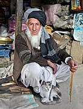
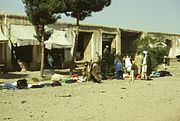
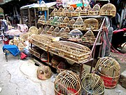
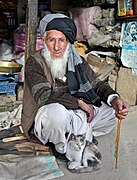
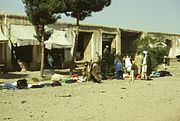
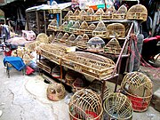

List of bazaars and souks
Article
Talk
From Wikipedia, the free encyclopedia
See also:
bazar
This is a list of bazaars and souqs
bazaars
Albania and Kosovo
Main articles: List of bazaars in Albania and List of bazaars in Kosovo
In Albania and Kosovo, two distinct types of bazaar can be found; Bedesten (also known as bezistan, bezisten, bedesten) which refers to a covered bazaar and an open bazaar.
City of Kanadahar, its principal bazaar and citadel, taken from the
Nakkarha Khatuna from Lieutinent James Rattrary,Afganistan
An Afgan elder sits outside his store at the anaba bazzaar in panshir,Afganistan
In Faryab Province
Ka Foroshi, The bird market in kabul
 




